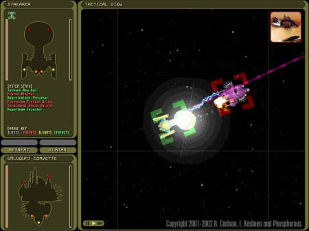
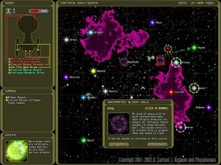

Un jeu parfait
L'article original est écrit par Ernest Adams publié par Gamasutra (septembre 2004).
L'auteur original n'est en aucun cas reponsable de la précision de cette traduction.
Qu’appelle-t-on un jeu « parfait » ? Souvent, quand on dit qu'une chose est parfaite, on veut dire qu'elle est meilleure que tout le reste, que toutes les autres choses de sa catégorie lui sont inférieures. Et dans ce cas, il est risqué de décrire quoi que ce soit comme parfait, parce que n’importe qui peut vous contredire, ne serait-ce que sur la base de goûts personnels. N’importe qui peut vous répondre qu’il préfère un autre jeu et que votre jeu « parfait » ne peut donc pas l’être. La notion de perfection, dans le langage courant, implique une notion de reconnaissance universelle. Mais je voudrais discuter de la notion de jeu parfait dans une acception légèrement différente du terme. La première définition de « parfait » dans mon American Heritage Dictionary est :
Auquel ne manque rien qui soit essentiel à l’ensemble ; complet dans son genre.
La définition quatre donne par ailleurs :
Complètement adapté à une situation ou à un but précis.
Si l’on suit ces définitions, je pense que Tetris est un jeu parfait, pour des raisons évidentes : il est impossible d’ajouter ou d’enlever quoi que ce soit au gameplay de Tetris sans perturber son élégante simplicité – même s’il y a d’autres jeux auxquels on peut préférer jouer [NDT : nous vous recommandons l'excellente vidéo de Matthewmatosis sur le sujet.]. Mais ce n’est pas de Tetris dont je voudrais parler dans cet article.
J’ai été juré pour l’Independent Games Festival un bon nombre de fois maintenant et après avoir joué à un nombre colossal de petits jeux, il n’y en a qu’un seul auquel je continue de jouer. Parmi les finalistes de la session 2003 de l’IGF, il y avait un petit jeu d’exploration et de combats spatiaux, intitulé Strange Adventures in Infinite Space.
Strange Adventures in Infinite Space (SAIS) a été créé par Digital Eel, un groupe constitué de seulement trois personnes : Iikka Keränen, connu pour avoir travaillé sur Quake ; Rich Carlson, qui travaillait auparavant chez Looking Glass et Ion Storm ; et Bill « Phosphorous » Sears, un « authentique » artiste avec un intérêt de longue date pour les jeux vidéo. Depuis qu’il est sorti, SAIS a donné lieu à un véritable culte et reçu un grand nombre de récompenses. Il y a maintenant une communauté de modding modeste – mais très active – autour du jeu et Digital Eel a annoncé travailler sur une suite. Le jeu a été porté sur Mac, Palm et Pocket PC. Vous pouvez télécharger une démo ou acheter le jeu – pour seulement 15 dollars ! – sur http://digital-eel.com/sais/.

Une chose à noter est que SAIS ne se repose pas sur la technique pour plaire. Il requiert uniquement un Pentium 2 350 MHz et DirectX 6. Les graphismes sont volontairement rétro : basse résolution et palette 256 couleurs. C’est un jeu 2D et, tout comme Lemmings ou Tetris, un passage à la 3D ne lui apporterait rien. Le son, rétro également, est en 8-bit mono. Et ça ne nuit en rien. SAIS est un tour de force non pas de la part du programmeur, mais de celle du game designer.
Le but de * Strange Adventures in Infinite Space* est d’explorer une zone de l’espace et de récolter des objets utiles en cours de route, en volant d’étoile en étoile à bord d’un vaisseau spatial. L’idée est bien évidemment loin d’être nouvelle. Mais ce qui en fait un jeu à part, c'est l’imagination et l’élégance de la réalisation. Du début à la fin, une partie prend entre 10 et 15 minutes. Chaque fois que vous jouez, les emplacements et les types d’objets sont choisis aléatoirement, ce qui rend chaque partie différente. De plus, il y a beaucoup plus d’objets dans le jeu qu’il n’est possible d’en trouver en une seule partie, et après avoir joué une vingtaine de parties, il y a encore de bonnes chances de tomber sur de nouveaux objets.
Quand vous retournez finalement à votre base avec votre cargaison, vous vous voyez attribuer un score qui mesure la valeur de ce que vous avez amassé. Vous devez accomplir votre mission en moins de dix années en temps de jeu ou payer une énorme amende pour votre retard. Voyager prend du temps et ceci est compliqué par la présence de nébuleuses qui ralentissent votre vaisseau. Lors de votre voyage, vous bénéficiez de descriptions hautes en couleur des lieux que vous visitez et d’une variété d’événements aléatoires, qui peuvent être aussi bien poétiques que mystérieux, drôles ou même dangereux.
Néanmoins, il ne s’agit absolument pas que d’exploration. Certains systèmes solaires sont déjà sous le contrôle d’extraterrestres, dont la plupart sont plutôt hostiles. Chaque fois que vos détecteurs repèrent des vaisseaux extraterrestres, vous avez le choix de rester pour découvrir qui ils sont ou de fuir. Parfois, ils se révèlent hostiles et vous devez combattre. Parfois, ils veulent commercer avec vous ou même s’engager comme mercenaires pour vous aider. Quand vous déclenchez un combat, le jeu change de gameplay et les combats se déroulent entre vaisseaux. Je décrirai ceci plus en détail dans la suite de l'article.
Les objets que vous trouvez sur les planètes se rangent en trois catégories : artefacts, formes de vie et améliorations pour votre vaisseau. Vous pouvez les échanger contre d’autres objets avec les commerçants, pour augmenter la vitesse ou la puissance de feu de votre vaisseau par exemple. Un autre détail intéressant est que vous gagnez des points (en nombre réduit) même si vous mourez, ce qui fait que vous n’avez pas l’impression d’avoir perdu votre temps.
SAIS présente quelques TDC [NDT : littéralement « condition pour refuser un biscuit », à savoir à un game designer qui a mal fait son travail, cf. tag Pas de Biscuit], mais de façon remarquable, elles ne sont pas gênantes. Il n’y a pas moyen de sauvegarder, mais vue la durée du jeu, ce n’est pas un problème. Vous devez apprendre par la méthode trial-and-error ce que je déteste en temps normal. Heureusement, faire une erreur ne vous tue que rarement. Est-ce qu’un Ion Impulsor Thruster est plus rapide qu’un Fusion Tube Thruster ? La seule façon de le savoir est d’essayer – ce qui semble raisonnable, dans la mesure où tous deux sont des objets inconnus que vous avez découverts en cours de route. C’est l'un des éléments qui fait la rejouabilité du jeu.
(La version Pocket PC du jeu, hélas, présente deux autres TDC absolument inacceptables. D’une, le jeu tourne si rapidement sur les PDA les plus récents que c’en devient injouable et d’autre part, il inclut un événement aléatoire qui vous tue immédiatement et ce sans aucun avertissement. Je n’arrive pas à comprendre que quelqu’un ait pu penser que ça améliorerait le jeu. Je me dois d’ajouter que la version Pocket PC n’a pas été développée par Digital Eel, mais par un autre studio).
Le jeu étant divisé entre deux modes de gameplay, l’exploration et le combat, les défis qui vous sont proposés se partagent aussi en deux types. Dans le mode exploration, votre principal challenge est le problème du voyageur de commerce [NDT : les férus d’informatique parmi nos lecteurs devraient connaître, les autres sont chaleureusement invités à se rendre sur la page Wikipédia.] : comment visiter chaque étoile en un temps minimal, en tenant compte du fait qu’il y a des nébuleuses et des trous noirs sur le chemin et que vous pourriez avoir à éviter les systèmes habités jusqu’à ce que vous soyez suffisamment armé.
En mode combat, le challenge consiste simplement à survivre et à vaincre vos ennemis, bien que vous ayez la possibilité de fuir si vous prenez une raclée (à condition que vos réacteurs soient plus puissants que ceux de l’ennemi !). L’interface utilisateur des combats est un modèle d’élégance et de simplicité. Vos armes visent et tirent automatiquement dès qu’un ennemi est à portée et vous n’avez pas à vous soucier de réserves d’énergie ou de stocks de munitions. Tout ce que vous avez à faire est de diriger votre vaisseau et ceux de vos alliés, si vous en avez. Placez votre curseur là où vous voulez aller ou là où vous voulez attaquer et cliquez. C’est aussi simple que ça. Vous pouvez choisir la vitesse à laquelle les combats se déroulent et même mettre le combat en pause pendant que vous réfléchissez à votre stratégie. Les graphismes et les effets sonores dans ce mode, bien qu’ils soient distinctement typés arcade, collent bien avec l'ambiance frénétique et cacophonique à laquelle on peut s’attendre quand dix vaisseaux différents interviennent.
Un autre grand atout de SAIS est que le niveau de difficulté est réglable pour les deux modes. Au début du jeu, vous pouvez choisir des systèmes solaires avec des nébuleuses plus ou moins grandes, ce qui change la difficulté de l’exploration, et régler la taille des groupes d’ennemis que vous rencontrez, ce qui change la difficulté des combats. Ceci nécessite un moment de réflexion, mais offre une grande marge de manœuvre au joueur.
Les bruitages sont très agréables – encore une fois, grâce à leur créativité et non leur technicité. Riches, évocateurs et visiblement choisis avec soin, les bruitages émis par chaque arme, vaisseau, détecteur, extraterrestre et artefact sont en parfaite adéquation avec les objets auxquels ils sont associés. Personnellement, j’ai un faible pour les baleines de l’espace, d’immenses et douces créatures qui apportent la bonne fortune et émettent un cri profond et sonore.
Dans la mesure où tout est placé aléatoirement à chaque début de partie, SAIS n’a évidemment pas une intrigue conventionnelle. Ce qu’il propose, néanmoins, c’est un monde dans lequel vous découvrez des fragments alléchants d’une histoire qui pourrait avoir eu lieu il y a bien longtemps. Chaque fois que vous découvrez un artefact, vous récupérez quelques informations sur son origine et ces détails semblent être, si ce n’est cohérents, du moins reliés entre eux. Qui est Eledra et pourquoi Lord Formax voulait-il l’assassiner ? Comment le prince Arcturus pouvait-il être qualifié de « jeune » alors qu’il avait au moins 105 ans (le Conographe Mélodique pourrait vous donner un indice) ?
Le jeu est aussi plein de références amusantes et d’hommages à d’autres œuvres de science-fiction. Parmi les objets que vous pouvez amasser, on trouve le monolithe de 2001, l’Odyssée de l’espace et un roman d’A.E. Van Vogt publié en 1934. Il est vrai que dans un article précédent, j’ai râlé contre les jeux qui brisent la suspension d’incrédulité du joueur en faisant référence à des éléments du monde réel à l’intérieur de l’univers du jeu : mais cette immersion n’est pas brisée lorsqu’on joue à SAIS. Au contraire, on lit avec plaisir ce qui vient, que ce soit drôle, plein d’imagination, pittoresque ou tout simplement bizarre.
Et c’est souvent bizarre : le jeu porte bien son nom. Voici la description du ver plasmatique, l’une des nombreuses formes de vie extraterrestres que vous pourrez découvrir au cours de vos voyages :
Une étrange créature énergétique qu’on trouve dans les moteurs des vaisseaux interstellaires et dans les circuits logiques temporels. Le ver plasmatique mange les simulacres de probabilité errants et est classé parmi les parasites temporels les plus utiles.
Cette description est inutile pour ce que j’en sais – contrairement à d’autres objets qui modifient le gameplay – mais c’est très drôle. SAIS est plein de faux blabla technique, un peu comme Dr. Who. Et pour en rajouter un peu, Plasma Worm est le nom du tout premier jeu de Digital Eel.
Alors, pourquoi Strange Adventures in Infinite Space est-il parfait à mes yeux ? D’abord, parce qu’il est si simple à prendre en main. Pas de commandes au clavier à apprendre : tout se fait à la souris. Ensuite, SAIS offre une rejouabilité incroyable et, pour 15 dollars, le meilleur rapport qualité/prix que j’ai vu depuis des années. Les graphismes et le son remplissent parfaitement leur fonction tout en restant délicieusement rétro. Le gameplay est brillamment équilibré et cette combinaison de stratégie et de tactique rappelle Super Star Strek, le jeu BASIC avec lequel les gens de ma génération ont grandi. Par ailleurs, le jeu est excitant : vous avez une véritable montée d’adrénaline quand vous arrivez dans un nouveau système solaire et vous retrouvez encerclés par une flotte de racketteurs garthiens. L’écriture est brillante, drôle et étrangement originale. Et encore mieux, le jeu ne nécessite pas un grand investissement en temps et vous récompense vite et sans radiner (quand je pense à tous ces jeux où il faut 15 minutes d’installation, puis une demi-heure de réglage d’options et d’introduction, puis 15 minutes de tutorial et une autre demi-heure ou plus avant que quoi que ce soit d’intéressant ne se produise : pendant ce temps, vous auriez pu jouer cinq ou six parties de SAIS d’affilée.)

Que pouvons nous apprendre des qualités de SAIS ? Voici quelques pistes :
Interface et équilibrage sont les deux éléments essentiels des jeux courts. Quand vous n’avez pas des graphismes à la pointe et un budget de plusieurs millions de dollars pour la direction artistique afin d’impressionner les joueurs, vous devez vous concentrer sur la jouabilité pure. Ce qui implique une interface utilisateur qui fait exactement ce que le joueur veut ainsi qu’un jeu parfaitement équilibré.
Un jeu qui récompense l’observation. Bien que SAIS puisse donner l’impression d’être un simple shoot'em up lors des phases de combat, si vous faites bien attention, vous vous rendrez compte que les différentes races d’extraterrestres utilisent des stratégies différentes et que leurs vaisseaux ont des faiblesses différentes. Avec le temps, vous pouvez apprendre à exploiter ces informations. C’est encore un élément qui augmente la rejouabilité.
La variété fait le sel de la vie. SAIS propose des tonnes de systèmes solaires, d’extraterrestres et d’artefacts bizarres à découvrir. Mais vous n’avez pas besoin de passer des heures et des heures à amasser des objets déjà vus avant de voir quelque chose de nouveau : vous découvrez des choses nouvelles en permanence. Et quand vous avez tout vu, vous pouvez toujours télécharger un mod gratuit et en voir encore beaucoup plus.
Pas besoin de nombres pour s’amuser. Bien qu’il propose beaucoup de types d’armes et de vaisseaux, SAIS évite le bordel numérique qui caractérise la plupart des RPG et un bon nombre de jeux de stratégie. Au lieu de ça, vous avez une connaissance viscérale de votre équipement acquise à travers l’expérimentation. Ça ne prend pas longtemps pour comprendre pourquoi le Particle Vortex Cannon est si précieux après l’avoir vu en action. Les seuls nombres présents dans le jeu sont les distances entre les étoiles et le score final. Même le système de commerce se débrouille sans eux.
Le texte est plus drôle que les images. Il s’agit d’une des plus grandes forces des vieux jeux d’aventure, qu’ils soient en mode texte ou non : ces jeux étaient tout simplement drôles. Combien de jeux récents en 3D m’ont-ils faits réellement rire ? Aucun. C’est normal, ils sont trop occupés à afficher des polygones. SAIS se passe très bien de graphismes léchés grâce à ses descriptions hilarantes. Je ne sais toujours pas à quoi ressemble un Lummox crêpelé… mais je souris à chaque fois que j’en attrape un.
SAIS est pour moi le parfait exemple de la vieille maxime de Trip Hawkins : simple, passionnant et profond. Simple parce qu’il est facile d’apprendre à jouer. Passionnant parce que le jeu est excitant. Profond parce qu’il y a toujours plus à découvrir. Strange Adventures in Infinite Space n’est pas un jeu qui révolutionne le genre ou qui réalise une prouesse technique. Au lieu de cela, il reprend une très vieille idée et lui donne un nouveau souffle grâce à une grande créativité et un gameplay impeccable.
Je tire mon chapeau aux gens de Digital Eel. Ils ont réussi à créer un jeu parfait.
Ajouter un commentaire
Commentaires

Ce site est une mine d'or. J'espère qu'on aura droit a d'autres articles !
Pourquoi il n'y a plus rien depuis 2015 ?
Merci pour la traduction qui fait plaisir à lire. Il est effectivement plaisant de voir que des jeux "simples" continuent de charmer certains :)